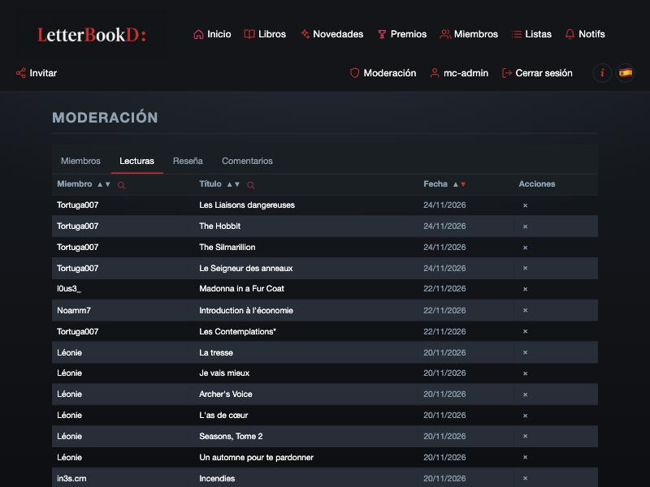

Moderación — Lecturas Solo administradores
Para qué sirve: Listar cada registro de lectura (miembro × libro) del club. Permite eliminar una ficha de lectura si está duplicada, es claramente falsa o ha sido abandonada.

Recorrido
Tabla: Miembro (nombre de usuario), Título (libro), Fecha (cuándo se registró la lectura) y Acciones (cruz para eliminar). Los mismos patrones de orden y filtro que la pestaña Miembros. Eliminar una lectura también elimina la reseña asociada, pero no los comentarios de otros miembros sobre esa reseña: quedan como comentarios huérfanos que hay que gestionar en la pestaña Comentarios.
Cadenas de acción
Cada fila describe un disparador en la interfaz, el modal o formulario que abre, y el efecto producido.
| Disparador | Modal / Campos | Efecto |
|---|---|---|
| Iconos de orden / filtro | — | Misma mecánica que en la pestaña Miembros. |
| Botón cruz (×) en una fila | Formulario POST de confirmación. | Elimina la ficha de lectura Y su reseña asociada. Los comentarios se conservan, pero apuntan a una reseña eliminada. |